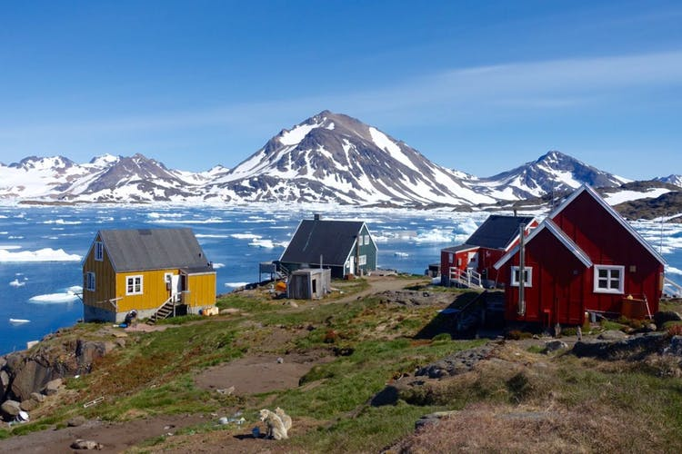

그린란드 가옥특징 모든 건물이 빨갛고 노랗고 파랗다. 주택이 밀집된 곳을 멀리서 바라보면 화려한 모자이크 같다. 그래도 색을 선택한 질서는 있을 것 같았다. 덴마크인이 들어온 18세기부터 건물의 기능에 따라 다른 색을 칠했다는 것이다. 빨강은 상업용, 노랑은 병원, 파랑은 생선공장 등등. 그래도 아직 옛 전통이 완전히 사라지지는 않아서 병원 종사자의 아파트에 노란색 띠를 두르기도 한다. 